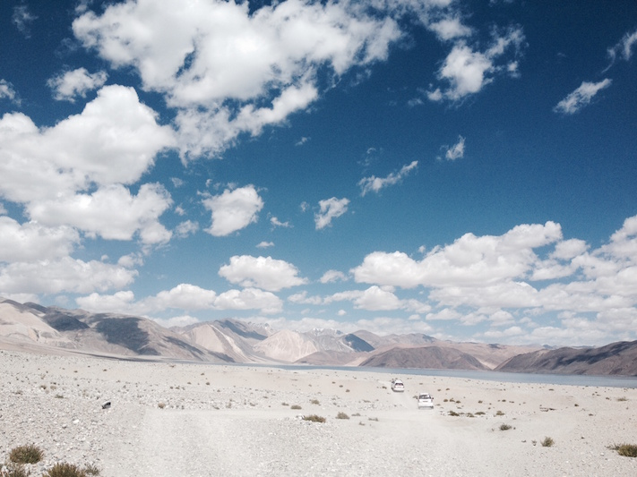
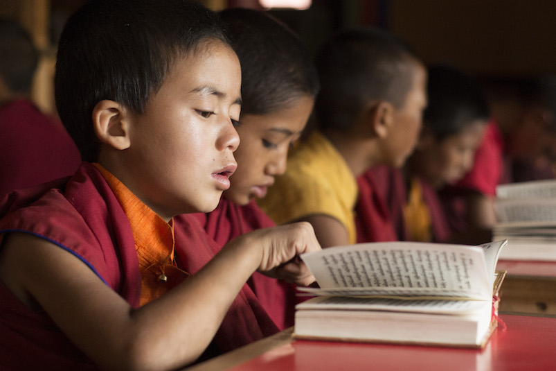
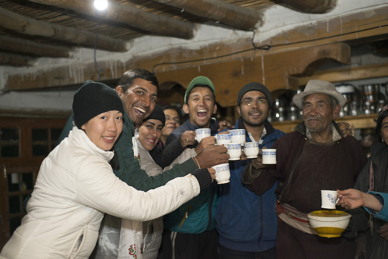

GHE 2014 - In Pursuit of Paradise

Day 1
We arrived as strangers in Leh and by the end of the day knew each other well enough to be doing Egyptian dancing as a group by the fire.

Day 1
We arrived as strangers in Leh and by the end of the day knew each other well enough to be doing Egyptian dancing as a group by the fire.

Day 2
Day 2 was a busy day at Mahabodhi school. We started the day, along with the kids, at their morning assembly, and then went on from there to various stops throughout the campus, discovering something new and interesting at every point about the life of the children there.
Day 2
Day 2 was a busy day at Mahabodhi school. We started the day, along with the kids, at their morning assembly, and then went on from there to various stops throughout the campus, discovering something new and interesting at every point about the life of the children there.

Day 3
The day started with refreshing early-morning yoga and meditation sessions, and flowed on to a drive through the scenic valleys of Ladakh to reach the spectacular Pangong Tso Lake.
Day 4
We woke up to a dream, finding the waters of the multi-colored Pangong Tso lapping up the shores near our campsite. We dipped in, took lessons in photography and had lots of fun near the lakeside. Later in the day we stopped by Hemis Monastery on our drive back to Leh. It was a day of amalgamation of nature and culture.

Day 4
We woke up to a dream, finding the waters of the multi-colored Pangong Tso lapping up the shores near our campsite. We dipped in, took lessons in photography and had lots of fun near the lakeside. Later in the day we stopped by Hemis Monastery on our drive back to Leh. It was a day of amalgamation of nature and culture.

Day 5
The cycling day was one of pure fun and adrenaline rush. With an open sky and scenic winding roads, we didn't even realise when and how our pedalling had eaten up all the miles between the start and the end.

Day 5
The cycling day was one of pure fun and adrenaline rush. With an open sky and scenic winding roads, we didn't even realise when and how our pedalling had eaten up all the miles between the start and the end.

Day 6
This was a day of lavish prayers and a light trek. We attended the centuries-old Lamayuru monastery's early morning prayer, where monks of all ages chanted together to create a vibrant spiritual atmosphere. We followed this up with an exploration of the moonland topography that Lamayuru is famous for.

Day 6
This was a day of lavish prayers and a light trek. We attended the centuries-old Lamayuru monastery's early morning prayer, where monks of all ages chanted together to create a vibrant spiritual atmosphere. We followed this up with an exploration of the moonland topography that Lamayuru is famous for.

Day 7
This was in ways the most exhausting and also the most fulfilling day of the expedition. We encountered the mighty Konskila pass which made our city-life problems seem petty in contrast. The feeling of achievement on scaling the pass on a cold day peppered with rain and light snow is something we would keep close to our hearts for long.
Day 7
This was in ways the most exhausting and also the most fulfilling day of the expedition. We encountered the mighty Konskila pass which made our city-life problems seem petty in contrast. The feeling of achievement on scaling the pass on a cold day peppered with rain and light snow is something we would keep close to our hearts for long.

Day 8
A light trek and lots of hard work characterized this day for us. After the mammoth effort of crossing Konskila the previous day the trek to Sumda Chenmo seemed like cake-walk. On reaching Sumda Chenmo we quickly got down to working on the micro-grid setup. We had just about a day’s time, and we made every minute count.

Day 8
A light trek and lots of hard work characterized this day for us. After the mammoth effort of crossing Konskila the previous day the trek to Sumda Chenmo seemed like cake-walk. On reaching Sumda Chenmo we quickly got down to working on the micro-grid setup. We had just about a day’s time, and we made every minute count.
Day 9
The D-Day, when the goal of the expedition was achieved. We set out to work right from the morning, and by late afternoon we had all the panels ready and all the wiring done. At around 7:30 in the evening we went live with the three grids in a synchronized pattern. The celebration that followed went on through the night.

Day 9
The D-Day, when the goal of the expedition was achieved. We set out to work right from the morning, and by late afternoon we had all the panels ready and all the wiring done. At around 7:30 in the evening we went live with the three grids in a synchronized pattern. The celebration that followed went on through the night.

Day 10
We left Sumda Chenmo with a huge sense of accomplishment, with the villagers wishing us well for the road ahead. It was a day when we had a fun trek with multiple stream crossings. We jumped over, waded through, and walked besides streams throughout before reaching our campsite in Chilling by the Zanskar river.

Day 10
We left Sumda Chenmo with a huge sense of accomplishment, with the villagers wishing us well for the road ahead. It was a day when we had a fun trek with multiple stream crossings. We jumped over, waded through, and walked besides streams throughout before reaching our campsite in Chilling by the Zanskar river.

Day 11
This was a packed day, which we started with a bout of rafting down the Zanskar river towards its confluence with the Indus. With muscles aching from all the oaring and throats sore from all the roaring, we quickly changed from our wetsuits to land-wear as we headed over to attend the TEDx Leh event.

Day 11
This was a packed day, which we started with a bout of rafting down the Zanskar river towards its confluence with the Indus. With muscles aching from all the oaring and throats sore from all the roaring, we quickly changed from our wetsuits to land-wear as we headed over to attend the TEDx Leh event.
Testimonials

Shama Amalean
IAE 2014 Alumni & Retail Merchandising Manager, New York
Joining hands in an unknown land to bring electricity to the beautiful people of Sumdha Chenmo was an extraordinary experience; one which not only cultivated strong friendships but also showcased the power of the human spirit when we come together to achieve greater good.

Ritu Menon
Marketing Professional, Mumbai
An experience of a lifetime that brought so much peace and happiness ...it was the mountains, the experience of connecting and learning from people from diverse cultures, varied age groups ....and above all, the feeling of having been able to contribute to make a difference to the lives of the people of Sumdo Chenmo. It was an honour to be part of the great and memorable moment on the evening of August 18,2014 when Sumdo Chenmo saw light for the first time ...You needed to be there !

Archi Verma
Consultant, Qualitative Research, TNS Dubai
The journey you undertake with GHE, is a journey unlike any other. As you are thrown against the bare and stark backdrop of the Himalayas, you learn to overcome your fears, challenge your limits and appreciate the beauty around you. In between conquering peaks and battling cold and sun, you befriend kindred spirits, and unite with those who were once strangers, to bring ‘light’ to a shared dream (Sumda Chenmo) !

Rolf F. Palgaard
Chief Operating Officer – Capana Group
GHE was for me an opportunity to bring back focus, dedication and a broader perspective to my life – it was extremely enriching and inspirational to see-, live with- and change the lives of the people in Sumda Chenmo. I can urge anyone who feels they want to do more with their life, to take the leap and join the cause of “improving sustainability worldwide” and GHE is the perfect place to start this journey.

Esther Wong
IAE 2013 Alumni, HongKong
Very seldom are we given the opportunity to make a measurable impact in the world. To be part of a team that helped to set up solar grids in the village of Sumda Chenmo, and seeing the pure joy on the villagers' faces when we turned on the lights for the first time, is something I will never forget.

Rikke Maria Eriksen
Psychologist, Abu Dhabi, UAE
“To live is to travel” the famous writer and Dane H.C. Andersen said, and I couldn’t agree more with him. It describes perfectly the feeling I had during and after this unique and extraordinaire experience. It was challenging, fun, rewarding, amazing. Up there in the mountains you feel totally free and alive, a vivid and life enhancing experience without a doubt. It was tough, it was magical, it was a real adventure. The people we met on our way live a simple, uncomplicated life often battling with the elements and harsh landscape they are surrounded by and still they surrounded us with a warmth and a welcome that amazed. The times I shared with my fellow adventurers can never be taken away or forgotten.